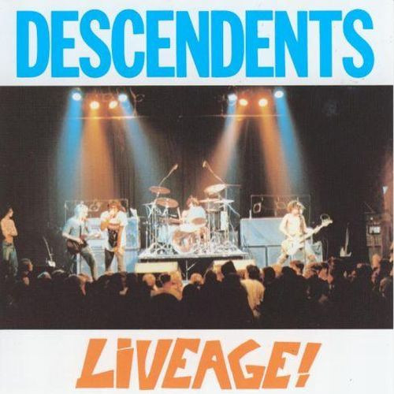

31 Days of Punk
The punk album for 12/29/2025 is:
Liveage
by Descendents
Ben's thoughts
For our second to last Live album of the year we chose “Liveage” by Descendants. Some background, these guys started out in Manhattan Beach, California as one of the first surf-punk bands to ever exist (1977). Originally calling themselves “The Itch” during their formative years, Frank Nevetta, Tony Lombardo, and Bill Stevenson would be the stone-set lineup that sent this three piece into recording legend. Their music does not just feel like punk, it feels like a jolt of caffeine was stored in a bullet and shot into your chest. This high-octane sound took years to develop though. The band would cycle through singers until Milo Aukerman stepped in as the lead. Many of you will recognize the famous icon of the band from the album cover of “Milo Goes To College,” their debut LP which references Aukerman's leave to go study Biology. After the recording session for the debut, the band went on hiatus as Bill Stevenson went to join Black Flag. Their return in 1985 brought another hit album “I Don’t Want to Grow Up” leading into an extended tour. That is how we get to Liveage.
I have listened to countless live albums in my day, as it is my preferred recording approach. There are many ingredients that go into making a great live album. Equipment, crowd, the room, and energy are all among these. In 1987 when the Descendents recorded this in Minneapolis, it could not have been a better time. Right off a break these guys came back with their boots still warm. At the same time this was shot during their finALL tour, on the precipice of another hiatus as Aukerman was to go pursue a career in biochemistry (spoiler alert, he still sings with the band). The show is a nonstop electric-fest meant to hit you right in the glasses. Songs like “All-O-Gistics” are sermons of rock and shining examples of how well these guys performed. The bass lines from Lombardo should be written about in textbooks, and the vocal percussion rimming the crisp drum parts is just so satisfying. I cannot truly tell whether this is a live album or a gift from the heavens, maybe both. “My Dad Sucks” and “Van” leave you breathless, never letting the listener above water even for a second. The back-half of this recording also shows off the prog-rock influences of this band, specifically within lead guitarist Stephen Egerton's parts.
As this month has shown, punk rock can be well translated within a studio recording, but it does not touch the live sound of these bands. If you want to truly hear why these bands were so revolutionary and continue to be, it doesn't matter the band, you NEED to listen to their live recordings. Liveage by Descendants is certainly one for the punk hall of fame, and it just absolutely revs my engine to hear the pure fury contained within these apostles of rock. If you want to go to rock & roll church, look no further than the Sunday service of Liveage.
Connor's thoughts
Two words. Live Album, and today we are covering an important one.
Descendents is a name that rings of infamy in the punk world, helping to pioneer pop-punk, while easing it in with that classic rock style. Their 1987 live album appropriately titled, “Liveage” takes the cake in respect to live punk performances, perfectly displaying the sound they are so well known for, and creating an experience that transports the listener to the barricade of their act.
For the never ending reasons you could love this band, they stand out in a few areas. Not only has band's lead Milo Aukerman (Their cartoon mascot) helped produce some of the greatest punk acts of the last 30 years including NOFX and Alkaline Trio, continuing to make punk fresh and interesting, but the band came about when punk was young, and had to build off of practically no sources. It is an impressive feat that over the years, brought the group to genre stardom, and their music eventually compiled to play this incredible late 80s performance. Their relatable and contemporary topics had a great effect on their popularity in and out of the punk scene creating new fans around the world, significant for punk at the time. Their lyrics were a healthy mixture of all the topics we have previously covered in pop-punk, that being teenage angst, girls, and the occasional serious tune about social issues and political corruption. This no doubt directly influenced the silly nature of Blink-182’s “Dude Ranch”, and in the same light, Green Day’s protest toward the political world, “American Idiot”. All this is to say Descendents’s influence knew no bounds, and punk would arguably be a marginally different place without them. Their mastery of strong guitar hooks and fast bass riffs (along with the legendary Bill Stevenson’s drum parts) gave them an advantage in crafting atmosphere at their crazy live shows and heir intense touring as well as less conventional (less politically charged) punk music made them the hottest act on the block in the 80s and 90s.
If you have followed along, you know Benjamin and I adore live albums, and while I know we shouldn’t be picking favorites, this album might just be it. “Liveage” has all the bells and whistles of punk, including the classic sound and influences of the late 70s and early 80s, as well as their own spin that would later be known as pop-punk. As someone who has not listened to Descendents before today, I would highly recommend starting with this performance. It sets listeners up with some of their greatest hits like “Wendy” and “Silly Girl”, while also giving a taste of the energy they brought to the studio. I mean, in the best way possible it put me in a trance of classic guitar melodies and the most fitting lyrics of juvenile life, filling me with nostalgia of my pre-college days (just like blink-182 does. Who could’ve guessed). I loved it, and I'd wager you will too.
It doesn’t get much better than this folks, so go spin Descendents's legendary finALL tour recording “Liveage”, and introduce yourself to the forefathers of pop-punk at their performing peak.
Listen on Spotify: